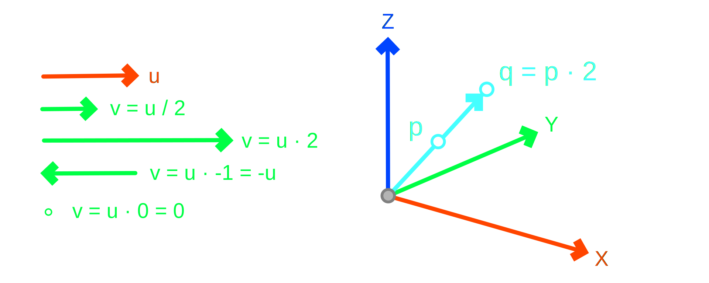

Transformations
This section introduces matrix operations associated with geometric transformations such as translation, scaling, reflection and rotation. Technically matrices are not required for performing geometric transformations. Vector addition and multiplication suffice for 99.9% of geometric constructions. This content is presented because matrices are extremely common and thus it is beneficial to develop some familiarity.
Matrix Transforms
Linear algebra matrices provide the mechanism for expressing geometric transformations. There are a few reasons for using them including: (a) they unify every possible linear transformations in one representation, (b) they allow for combining several consecutive transformations in one data structure, (c) modern GPUs provide hardware acceleration for matrix transformations.
Basis Vectors
In computational geometry, square matrices are mostly used such as 2x2, 3x3 and 4x4. One interpretation for such matrices is that they just provide a convenient data structure for grouping the basis vectors of a coordinate system.
A basis is defined in 3D by its three orthonormal vectors X = [Xx, Xy, Xz], Y = [Yx, Yy, Yz], and Z = [Zx, Zy, Zz]. A 3x3 matrix captures these vectors in a compact representation as seen below. Note that the vectors are arranged in columns but often shown in rows.
""" General Basis 3D
"""
xform = [[ Xx, Yx, Zx ],
[ Xy, Yy, Zy ],
[ Xz, Yz, Zz ]]
""" World Basis 3D
Identity Matrix
"""
world = [[1.0, 0.0, 0.0],
[0.0, 1.0, 0.0],
[0.0, 0.0, 1.0]]
While this captures the basis vectors, it misses the origin point O = [Ox, Oy, Oz] or translation. Therefore, the matrix representation is expanded with an additional column to host the origin and a row to keep the matrix square. Adding the last row is for computational convenience, namely performing matrix multiplications. Note that for the basis X, Y and Z column vectors their 4th component is 0.0 but for the origin or translation vector it is 1.0.
""" General Affine 3D
"""
xform = [[ Xx, Yx, Zx, Ox ],
[ Xy, Yy, Zy, Oy ],
[ Xz, Yz, Zz, Oz ],
[ 0, 0, 0 1 ]]
""" World Affine 3D
Identity Matrix
"""
world = [[1.0, 0.0, 0.0, 0.0],
[0.0, 1.0, 0.0, 0.0],
[0.0, 0.0, 1.0, 0.0],
[0.0, 0.0, 0.0, 1.0]]
There are several variations for encoding a matrix using programming language constructs. The representation above is known as row-major style because the first subscript is the row and second is the column when using matrix[row][col]. Its transpose is known as column-major. GPUs prefer flat lists instead of nested lists. It is also possible to encode a matrix as a class containing four column vector members as seen below.
""" Transformation Matrix Column
"""
class Vec4:
def __init__( self, x, y, z, w ):
self.X = x
self.Y = y
self.Z = z
self.W = w
""" Transformation Matrix
"""
class Mat4:
def __init__( self,
xx = 1.0, yx = 0.0, zx = 0.0, wx = 0.0,
xy = 0.0, yy = 1.0, zy = 0.0, wy = 0.0,
xz = 0.0, yz = 0.0, zz = 1.0, wz = 0.0,
xw = 0.0, yw = 0.0, zw = 0.0, ww = 1.0 ):
self.X = Vec4( xx, xy, xz, xw )
self.Y = Vec4( yx, yy, yz, yw )
self.Z = Vec4( zx, zy, zz, zw )
self.W = Vec4( wx, wy, wz, ww )
""" Identity Matrix
"""
@staticmethod
def Identity( ):
return Mat4( )
""" Matrix from Basis
"""
@staticmethod
def Basis( o, x, y, z ):
return Mat4( x.X, y.X, z.X, o.X,
x.Y, y.Y, z.Y, o.Y,
x.Z, y.Z, z.Z, o.Z,
0.0, 0.0, 0.0, 1.0 )
""" Matrix from Plane
"""
@staticmethod
def Plane( o, x, y ):
return self.Basis( o, x, y,
Vector3d.CrossProduct( x, y ) )
In Rhino 4x4 transformation matrices are represented by the Transform class, see also the documentation. Transform objects support several useful operations that can be performed. Manually constructing and editing matrices is rather demotivated by Rhino but there are still some methods for accessing a matrix's elements as seen below.
""" Create World Basis
"""
world = Transform.Identity
""" Getting [row, col]
"""
print( world.Item[3, 3] )
""" Setting [row, col]
"""
world.Item[0, 0] = 1.0
Matrix Point
The multiplication of matrices with points and vectors captures the process of transforming them. The process involves computing three dot products which represent the transformed coordinates or components.
""" Transformation Matrix M
"""
M = [[ Xx, Yx, Zx, Ox ],
[ Xy, Yy, Zy, Oy ],
[ Xz, Yz, Zz, Oz ],
[ 0, 0, 0 1 ]]
""" Matrix Point Product q = M x p
"""
p = Point3d( px, py, pz )
q = Point3d(
Xx * px + Yx * py + Zx * pz + Ox * 1.0,
Xy * px + Yy * py + Zy * pz + Oy * 1.0,
Xz * px + Yz * py + Zz * pz + Oz * 1.0 )
""" Matrix Vector Product v = M x u
"""
u = Vector3d( ux, uy, uz )
v = Vector3d(
Xx * ux + Yx * uy + Zx * uz + Ox * 0.0,
Xy * ux + Yy * uy + Zy * uz + Oy * 0.0,
Xz * ux + Yz * uy + Zz * uz + Oz * 0.0 )
Point and vector multiplication by a matrix is slightly different even though the same notation is used. A point p with coordinates [px, py, pz] is converted to [px, py, pz, 1.0] while a vector u with components [ux, uy, uz] is converted to [ux, uy, uz, 0.0] before being multiplied with a transformation matrix. This is because vectors do not convey the notion of position but only direction, therefore the 4th column of the matrix which conveys position or translation, must not be used. Only the upper-left 3x3 sub-matrix is relevant to vectors. The value of 0.0 or 1.0 in the 4th element is therefore used as a mask to apply or not the translation.
""" Point and Vector Transformation
"""
class Mat4:
def MatrixPointProduct( self, point ):
xx, yx, zx = self.X.X, self.Y.X, self.Z.X
xy, yy, zy = self.X.Y, self.Y.Y, self.Z.Y
xz, yz, zz = self.X.Z, self.Y.Z, self.Z.Z
ox, oy, oz = self.W.X, self.W.Y, self.W.Z
return Point3d(
ox + xx * point.X + yx * point.Y + zx * point.Z,
oy + xy * point.X + yy * point.Y + zy * point.Z,
oz + xz * point.X + yz * point.Y + zz * point.Z )
def MatrixVectorProduct( self, vector ):
xx, yx, zx = self.X.X, self.Y.X, self.Z.X
xy, yy, zy = self.X.Y, self.Y.Y, self.Z.Y
xz, yz, zz = self.X.Z, self.Y.Z, self.Z.Z
return Vector3d(
xx * vector.X + yx * vector.Y + zx * vector.Z,
xy * vector.X + yy * vector.Y + zy * vector.Z,
xz * vector.X + yz * vector.Y + zz * vector.Z )
In Rhino there are two ways to perform matrix times point or vector multiplication as seen below. Using the multiplication operator * produces a new point or vector, while using the point's or vector's Transform( ) method modifies the point or vector in-place. Note that while M * p is supported, the reverse p * M raises an exception.
""" Matrix and Point
"""
M = Transform.Identity
p = Point3d( 1, 2, 3 )
""" Transform -> Creates new point
"""
q = M * p
""" Transform -> Modifies in-place
"""
p.Transform( M )
Matrix Matrix
Multiplication between two 4x4 matrices produces a new 4x4 matrix that encodes the combined or compounded transformation. You may recall that multiplication between two matrices A and B is not commutative, that is A x B != B x A.
""" Matrix Multiplication
"""
class Mat4:
def MatrixMatrixProduct( self, that ):
""" Unpack Matrix Elements
"""
sxx, syx, szx, swx = self.X.X, self.Y.X, self.Z.X, self.W.X
sxy, syy, szy, swy = self.X.Y, self.Y.Y, self.Z.Y, self.W.Y
sxz, syz, szz, swz = self.X.Z, self.Y.Z, self.Z.Z, self.W.Z
sxw, syw, szw, sww = self.X.W, self.Y.W, self.Z.W, self.W.W
txx, tyx, tzx, twx = that.X.X, that.Y.X, that.Z.X, that.W.X
txy, tyy, tzy, twy = that.X.Y, that.Y.Y, that.Z.Y, that.W.Y
txz, tyz, tzz, twz = that.X.Z, that.Y.Z, that.Z.Z, that.W.Z
txw, tyw, tzw, tww = that.X.W, that.Y.W, that.Z.W, that.W.W
""" Product Matrix Elements
"""
rxx = sxx * txx + syx * txy + szx * txz + swx * txw
ryx = sxx * tyx + syx * tyy + szx * tyz + swx * tyw
rzx = sxx * tzx + syx * tzy + szx * tzz + swx * tzw
rwx = sxx * twx + syx * twy + szx * twz + swx * tww
rxy = sxy * txx + syy * txy + szy * txz + swy * txw
ryy = sxy * tyx + syy * tyy + szy * tyz + swy * tyw
rzy = sxy * tzx + syy * tzy + szy * tzz + swy * tzw
rwy = sxy * twx + syy * twy + szy * twz + swy * tww
rxz = sxz * txx + syz * txy + szz * txz + swz * txw
ryz = sxz * tyx + syz * tyy + szz * tyz + swz * tyw
rzz = sxz * tzx + syz * tzy + szz * tzz + swz * tzw
rwz = sxz * twx + syz * twy + szz * twz + swz * tww
rxw = sxw * txx + syw * txy + szw * txz + sww * txw
ryw = sxw * tyx + syw * tyy + szw * tyz + sww * tyw
rzw = sxw * tzx + syw * tzy + szw * tzz + sww * tzw
rww = sxw * twx + syw * twy + szw * twz + sww * tww
return Mat4(
rxx, ryx, rzx, rwx,
rxy, ryy, rzy, rwy,
rxz, ryz, rzz, rwz,
rxw, ryw, rzw, rww )
For geometric transformations this makes sense, because the result of combining a rotation and a translation, for example depends on the order on the order of performing those two operations. Note that the way the multiplication is written A x B is the opposite of the application order, namely first B is applied followed by A, that is read right-to-left.
""" Matrix Multiplication
"""
class Mat4:
def __mul__( self, that ):
if( isinstance( that, Point3d ) ):
return self.MatrixPointProduct( that )
if( isinstance( that, Vector3d ) ):
return self.MatrixVectorProduct( that )
if( isinstance( that, Mat4 ) ):
return self.MatrixMatrixProduct( that )
raise Exception( 'Unsupported Operation' )
In Rhino, Transform objects implement multiplication using the standard * operator. Therefore, compounding transformations is performed as seen below.
""" Constructing Matrices
"""
R = Transform.Rotation( ... )
T = Transform.Translation( ... )
""" Combining Matrices
"""
RT = R * T #-- Translate then Rotate
TR = T * R #-- Rotate then Translate
Translation
Point and vector addition provides the mechanics for translating geometry. Using matrices, translation is encoded in the last column as seen below.
""" Translation Matrix
"""
class Mat4:
@staticmethod
def Translation( direction ):
return Mat4(
xx = 1.0, yx = 0.0, zx = 0.0, wx = direction.X,
xy = 0.0, yy = 1.0, zy = 0.0, wy = direction.Y,
xz = 0.0, yz = 0.0, zz = 1.0, wz = direction.Z,
xw = 0.0, yw = 0.0, zw = 0.0, ww = 1.0 )
Note
For translation matrices, the matrix-point multiplication simplifies as seen below. As expected translation is just point-vector addition.
""" Translation Matrix x Point
"""
p = Point3d( px, py, pz )
T = Mat4.Translation( Vector3d( tx, ty, tz ) )
q = Point3d( #-- q = T * p
1.0 * px + 0.0 * py + 0.0 * pz + tx * 1.0,
0.0 * px + 1.0 * py + 0.0 * pz + ty * 1.0,
0.0 * px + 0.0 * py + 1.0 * pz + tz * 1.0 )
q = Point3d( px + tx, py + ty, pz + tz )
In Rhino the method Translation( ) is used for constructing translation matrices as seen below. Its parameters may be either the translation vector itself or its three components.
""" Translation Vector
"""
t = Vector3d( tx, ty, tz )
""" Translation Matrix
"""
T = Transform.Translation( t )
#-- equivalent
T = Transform.Translation( tx, ty, tz )
Scaling
Point and vector multiplication by a scalar captures the notion of geometric scaling. In matrix form this is represented by its diagonal.

Uniform
Uniform scaling stretches or shrinks all directions by the same amount. Therefore, the same value is used for all diagonal elements of the matrix as seen below.
""" Uniform Scaling Matrix
"""
class Mat4:
@staticmethod
def ScaleUniform( s ): #-- s : float
return Mat4(
xx = s, yx = 0.0, zx = 0.0, wx = 0.0,
xy = 0.0, yy = s, zy = 0.0, wy = 0.0,
xz = 0.0, yz = 0.0, zz = s, wz = 0.0,
xw = 0.0, yw = 0.0, zw = 0.0, ww = 1.0 )
Note
For scaling matrices, the matrix-point and matrix-vector multiplication simplifies as seen below. As expected scaling is just point-scalar and vector-scalar multiplication.
""" Scaling Matrix x Point
"""
q = Point3d(
s * px + 0.0 * py + 0.0 * pz,
0.0 * px + s * py + 0.0 * pz,
0.0 * px + 0.0 * py + s * pz )
q = Point3d( px * s, py * s, pz * s )
Rhino provides several variations for constructing scaling transforms including with or without an origin. Note that scaling about an origin, or anchor point, combines translation and scaling.
""" Uniform Scaling Factor
"""
s = float( factor )
""" Uniform Scaling Matrix about [0.0, 0.0, 0.0]
"""
S = Transform.Scale( Point3d.Origin, s )
""" Uniform Scaling Origin
"""
o = Point3d( ox, oy, oz )
""" Uniform Scaling Matrix about Origin
"""
S = Transform.Scale( o, s )
Non-Uniform
Non-uniform scaling stretches or shrinks each direction by a different amount. Effectively, each diagonal element of the transformation matrix has a separate value as seen below.
""" Non-Uniform Scaling Matrix
"""
class Mat4:
@staticmethod
def ScaleNonUniform( s ): #-- s : Vector3d
return Mat4(
xx = s.X, yx = 0.0, zx = 0.0, wx = 0.0,
xy = 0.0, yy = s.Y, zy = 0.0, wy = 0.0,
xz = 0.0, yz = 0.0, zz = s.Z, wz = 0.0,
xw = 0.0, yw = 0.0, zw = 0.0, ww = 1.0 )
Note
For scaling matrices, the matrix-point and matrix-vector multiplication simplifies as seen below. As expected scaling is just point-scalar and vector-scalar multiplication but with different factors for each.
""" Scaling Matrix x Point
"""
q = Point3d(
s.X * px + 0.0 * py + 0.0 * pz,
0.0 * px + s.Y * py + 0.0 * pz,
0.0 * px + 0.0 * py + s.Z * pz )
q = Point3d( px * s.X, py * s.Y, pz * s.Z )
In Rhino the Scale( ) method supports non-uniform scaling with or without an origin. The origin in this scenario is expressed as a plane for flexibility. To construct a non-uniform matrix without an origin, the WorldXY plane can be used as seen below.
""" Non-Uniform Scaling Factors
"""
s = Vector3d( sx, sy, sz )
""" Non-Uniform Scaling Matrix about [0.0, 0.0, 0.0]
"""
S = Transform.Scale( Plane.WorldXY, s.X, s.Y, s.Z )
""" Non-Uniform Scaling Origin
"""
o = Plane( Point3d( ox, oy, oz ),
Vector3d.XAxis, Vector3d.YAxis )
""" Non-Uniform Scaling Matrix about Origin
"""
S = Transform.Scale( o, s.X, s.Y, s.Z )
Reflection
Reflection or mirror transform is conceptually performed about a reference direction or plane. The matrix below represents pure reflection about a plane with unit normal n = [nx, ny, nz] and origin at [0.0, 0.0, 0.0]. Reflecting a point p is constructed by computing the projection of the vector p - o onto the normal d = n ( p - o ) and then moving back from p twice the distance to q, that is q = p - 2 * n ( p - o ) n.
""" Reflection Matrix
"""
class Mat4:
@staticmethod
def Reflection( normal ):
xx = normal.X * normal.X * 2.0
xy = normal.X * normal.Y * 2.0
xz = normal.X * normal.Z * 2.0
yy = normal.Y * normal.Y * 2.0
yz = normal.Y * normal.Z * 2.0
zz = normal.Z * normal.Z * 2.0
return Mat4( 1.0 - xx, 0.0 - xy, 0.0 - xz, 0.0,
0.0 - xy, 1.0 - yy, 0.0 - yz, 0.0,
0.0 - xz, 0.0 - yz, 1.0 - zz, 0.0,
0.0, 0.0, 0.0, 1.0 )
Note
For reflection matrix about the XY-plane or the Z-axis, the matrix-point multiplication simplifies as seen below. This is equivalent of changing the sign of the point's Z-coordinate.
""" Reflection XY Matrix x Point
"""
XY = [[ 1.0, 0.0, 0.0, 0.0 ],
[ 0.0, 1.0, 0.0, 0.0 ],
[ 0.0, 0.0,-1.0, 0.0 ],
[ 0.0, 0.0, 0.0, 1.0 ]]
xy = Point3d(
1.0 * px + 0.0 * py + 0.0 * pz,
0.0 * px + 1.0 * py + 0.0 * pz,
0.0 * px + 0.0 * py - 1.0 * pz )
q = Point3d( px, py, -pz )
In Rhino the Mirror( ) method supports reflection about a plane with or without an origin. Note that reflection about an origin other than [0.0, 0.0, 0.0] combines translation and reflection.
""" Point and Reflection Plane
"""
p = Point3d( px, py, pz )
n = Vector3d( nx, ny, nz )
""" Reflection about [0.0, 0.0, 0.0]
"""
M = Transform.Mirror( Plane( Point3d.Origin, n ) )
q = M * p
""" Reflection about Origin
"""
o = Point3d( ox, oy, oz )
M = Transform.Mirror( Plane( o, n ) )
q = M * p
Rotation
Rotation is a significantly more complex geometric transformation and there are several ways to represent and compute. Rotation matrices are represented by the upper-left 3x3 components of a 4x4 transformation matrix. A pure rotation is equivalent to three orthonormal basis vectors, one per column.
Axis Angle
The most intuitive approach for performing rotations is the axis-angle representation. It requires an axis of rotation represented by a unit vector axis and and angle in radians. (1)
- Sometimes, these two pieces of information are packed into a single vector with the angle encoded as the vector's magnitude.

""" Axis and Angle Rotation
"""
class Mat4:
@staticmethod
def AxisAngle( axis, angle ):
sin = math.sin( angle )
cos = math.cos( angle )
soc = 1.0 - cos
return Mat4( xx = axis.X * axis.X * soc + cos,
yx = axis.X * axis.Y * soc - axis.Z * sin,
zx = axis.X * axis.Z * soc + axis.Y * sin,
xy = axis.Y * axis.X * soc + axis.Z * sin,
yy = axis.Y * axis.Y * soc + cos,
zy = axis.Y * axis.Z * soc - axis.X * sin,
xz = axis.Z * axis.X * soc - axis.Y * sin,
yz = axis.Z * axis.Y * soc + axis.X * sin,
zz = axis.Z * axis.Z * soc + cos )
In Rhino the Rotation( ) method supports the axis-angle representation with or without an origin of rotation. Note that using an origin produces a matrix combining translation and rotation.
""" Rotation Axis and Angle
"""
axis = Vector3d( ux, uy, uz )
angle = float( rads )
""" Rotation Matrix about [0.0, 0.0, 0.0]
"""
R = Transform.Rotation( angle, axis, Point3d.Origin )
""" Rotation Matrix about Origin
"""
R = Transform.Rotation( angle, axis, Point3d( ox, oy, oz ) )
Euler Angles
Rotation can be also expressed by combining elementary rotations about the World's basis vectors X, Y and Z. This approach is known as the Euler-Angles rotation and requires three angles, one per axis. First the elementary rotation matrices are defined and then their product is computed as seen below.
""" Elementary and Euler Angles Rotation
"""
class Mat4:
@staticmethod
def RotateX( angle ):
sin = math.sin( angle )
cos = math.cos( angle )
return Mat4( 1.0, 0.0, 0.0, 0.0,
0.0, cos,-sin, 0.0,
0.0, sin, cos, 0.0,
0.0, 0.0, 0.0, 1.0 )
@staticmethod
def RotateY( angle ):
sin = math.sin( angle )
cos = math.cos( angle )
return Mat4( cos, 0.0, sin, 0.0,
0.0, 1.0, 0.0, 0.0,
-sin, 0.0, cos, 0.0,
0.0, 0.0, 0.0, 1.0 )
@staticmethod
def RotateZ( angle ):
sin = math.sin( angle )
cos = math.cos( angle )
return Mat4( cos,-sin, 0.0, 0.0,
sin, cos, 0.0, 0.0,
0.0, 0.0, 1.0, 0.0,
0.0, 0.0, 0.0, 1.0 )
@staticmethod
def RotateZYX( ax, ay, az ):
return ( Mat4.RotateX( ax ) *
Mat4.RotateY( ay ) *
Mat4.RotateZ( az ) )
Rhino supports two common permutation of Euler-Angle rotation, namely RotationZYX( ) and RotationZYZ( ).
""" Angles per Axis
"""
ax, ay, az = ...angles
""" Combined Rotation Matrix
"""
R = Transform.RotationZYX( az, ay, ax )
Euler-Angle rotation is very old-fashioned, rather counterintuitive and degenerates for certain rotation combinations. As such it is recommended to be avoided. However, because it is still used in robotics applications, it is good to be generally aware of.
Quaternions
The modern representation for rotation is based on the concept of a unit quaternion. Quaternions are counterintuitive because they represent complex number 4D vectors which cannot be visually comprehended. Quaternions are not required for 99% of geometric constructions. However, they are presented because they are often used in game engines and robotics applications.
Quaternions are popular because of their properties including (a) They are compact in that they required only 4 floats, compared to 9 per rotation matrix, (b) They express only rotation, unlike matrices that conflate rotation, scaling and reflection, and (c) They combine using multiplication, which is not possible with axis-angle vectors.
The most sane way to approach quaternions is to: (a) Convert regular 3D vectors to quaternions, (b) Perform the rotational transformations required, (c) Convert back from quaternion space to normal 3D vector space.
Representation
Quaternions are represented as q = [qx, qy, qz, qw], where approximately the qx, qy and qz express the axis of rotation, and qw the angle. They behave like vectors in that they can be added, multiplied and have length. Rotations require unit-length quaternions, so unless otherwise specified, quaternions are assumed normalized.
""" Quaternion
"""
class Quat:
def __init__( self, x, y, z, w ):
self.X = x
self.Y = y
self.Z = z
self.W = w
@property
def Length( self ):
return math.sqrt(
self.X ** 2 +
self.Y ** 2 +
self.Z ** 2 +
self.W ** 2 )
def Normalize( self ):
length = self.Length
if( length == 0.0 ):
return Quat( 0.0, 0.0, 0.0, 0.0 )
return Quat( self.X / length,
self.Y / length,
self.Z / length,
self.W / length )
Construction
Vectors can be converted from and to quaternions, where for a vector u = [ux, uy, uz], the associated quaternion is q = [ux, uy, uz, 0.0]. Additionally, there are several methods for converting between quaternions, Axis-Angle and Euler-Angles. Constructing a quaternion using an Axis-Angle representation is shown below.
class Quat:
""" Vector to Quaternion
"""
@statimethod
def FromVector( vector ):
return Quat( vector.X,
vector.Y,
vector.Z, 0.0 )
""" Quaternion from Axis-Angle
"""
@staticmethod
def FromAxisAngle( axis, angle ):
sin = math.sin( angle / 2.0 )
cos = math.cos( angle / 2.0 )
return Quat( axis.X * sin,
axis.Y * sin,
axis.Z * sin,
cos )
Rhino's Quaternion expressing the same construction from Axis-Angle is presented below. Note that Rhino's naming convention uses q = [a, b, c, d], where a = qw and b, c, and d map to qx, qy, and qz, respectively.
""" Quaternion from Axis-Angle
"""
q = Quaternion.Rotation( angle, axis )
Compound Rotations
Combining rotations, expressed as quaternions, is achieved by regular multiplication. Note that quaternion multiplication is not commutative u * v != v * u, so the order is important.
""" Quaternion Quaternion Product
"""
class Quat:
def QuatQuatProduct( self, that ):
sx, sy, sz, sw = self.X, self.Y, self.Z, self.W
tx, ty, tz, tw = that.X, that.Y, that.Z, that.W
return Quat(
sw * tx + sx * tw + sy * tz - sz * ty
sw * ty + sy * tw + sz * tx - sx * tz
sw * tz + sz * tw + sx * ty - sy * tx
sw * tw - ( sx * tx + sy * ty + sz * tz ) )
def __mul__( self, that ):
if( isinstance( that, Quat ) ):
return self.QuatQuatProduct( that )
raise Exception( 'Unsupported Operation' )
""" Combined Rotation
"""
u = Quat.Rotation( Vector3d( ux, uy, uz ), ua )
v = Quat.Rotation( Vector3d( vx, vy, vz ), ub )
w = u * v
Quaternion To Matrix
Rotating points and vectors using unit quaternions can be achieved in several ways. One approach is to convert the quaternion to a 4x4 matrix and perform the transformation as usual.
""" Quaternion to Transformation Matrix
"""
class Quat:
def ToMatrix( self ):
x, y, z, w = self.X, self.Y, self.Z, self.W
xx, yy, zz = x * x, y * y, z * z
xy, zx, yz = x * y, z * x, y * z
xw, yw, zw = x * w, y * w, z * w
return Mat4( 1.0 - 2.0 * ( yy + zz ),
2.0 * ( xy - zw ),
2.0 * ( zx + yw ), 0.0,
2.0 * ( xy + zw ),
1.0 - 2.0 * ( xx + zz ),
2.0 * ( yz - xw ), 0.0,
2.0 * ( zx - yw ),
2.0 * ( yz + xw ),
1.0 - 2.0 * ( xx + yy ), 0.0 )
""" Point Rotation
"""
p = Point3d( px, py, pz )
u = Quat.FromAxisAngle( Vector3d( ux, uy, uz ), ua )
q = u.ToMatrix( ) * p
The equivalent in Rhino uses the GetRotation( ) method which returns the transformation matrix, as seen below.
""" Point Rotation
"""
p = Point3d( px, py, pz )
u = Quaternion.Rotation( ua, Vector3d( ux, uy, uz ) )
q = u.GetRotation( ) * p
Quaternion Sandwich Product
The same rotational operation can be achieved using the quaternion product q' * u * q, where q = [qx, qy, qz, qw] is the rotation quaternion, q' = [-qx, -qy, -qz, qw] is its conjugate, in the complex number sense, and u = [ux, uy, uz] is a vector converted to a quaternion.
class Quat:
@property
def Conjugate( self ):
return Quat( -self.X,
-self.Y,
-self.Z,
self.W )
@property
def Inverse( self ):
length = self.Length
if( length == 0.0 ):
return Quat( 0.0, 0.0, 0.0 ,0.0 )
return Quat(
self.X / length,
self.Y / length,
self.Z / length,
self.W /-length )
def RotateVector( self, u ):
return ( self.Conjugate *
Quat.FromVector( u ) *
self )
""" Point and Rotation
"""
u = Vector3d( ux, uy, uz )
q = Quat.FromAxisAngle( Vector3d( ax, ay, az ), angle )
v = q.RotateVector( u )
Note that quaternion rotation only makes sense for vectors. It can work with points if they are assumed in reference to the world. Otherwise, points must be first mapped to the world basis, then rotated using quaternions, and finally mapped back to their local basis.
Rhino provides the Rotate( ) method with the same semantics as above.
""" Point and Rotation
"""
u = Vector3d( ux, uy, uz )
q = Quaternion.Rotation( angle, Vector3d( ax, ay, az ) )
v = q.Rotate( u )
Interpolation of Rotations
Interpolating rotations using quaternions is one of their earliest applications that motivated their use. This is because interpolating both between transformation matrices and axis-angle vectors, element-wise, produces unreasonable results. On the other hand, quaternion interpolation rotates all three basis vectors of a coordinate system smoothly, with minimal twists.
There are a couple of versions of quaternion interpolation: Linear interpolation which is not unlike regular point and vector interpolation. Note that using linear combinations requires quaternion normalization. Additionally, there is spherical linear interpolation, which can be considered as a rotation about a major circle, that is passing through the center, of a sphere at equal angle steps.
class Quat:
""" Linear Interpolation
"""
def Lerp( self, that, t ):
quat = Quat(
self.X * ( 1.0 - t ) + that.X * t,
self.Y * ( 1.0 - t ) + that.Y * t,
self.Z * ( 1.0 - t ) + that.Z * t,
self.W * ( 1.0 - t ) + that.W * t )
return quat.Normalize( )
""" Spherical Linear Interpolation
"""
def Slerp( self, that, t ):
cos = ( self.X * that.X +
self.Y * that.Y +
self.Z * that.Z +
self.W * that.W )
cos = min( max( cos, -1 ), 1 )
ang = math.acos( cos )
sin = math.sin ( ang )
if( abs( ang ) == 0.0 ):
return that
sin = 1.0 / sin
u = sin * math.sin( ( 1.0 - t ) * ang )
v = sin * math.sin( t * ang )
return Quat(
self.X * u + that.X * v,
self.Y * u + that.Y * v,
self.Z * u + that.Z * v,
self.W * u + that.W * v )
Matrix Inverse
The inverse of a square matrix M-1 multiplied with the matrix itself M-1M = I produces the identity matrix. A matrix is invertible if its determinant is not zero. A transformation matrix constructed by compounding translation, rotation, scaling and reflection, is generally invertible. The inverse of transformation matrix has some interesting properties. Note that from the point transformation formula Mp = q, by multiplying both sides with the inverse produces M-1Mp = M-1q or p = M-1q.
The interpretation of this is that transforming a point by a matrix Mp = q is equivalent to local-to-global coordinates transform, while transforming a point by the inverse of the matrix p = M-1q produces the global-to-local mapping.
""" Matrix Inverse
"""
class Mat4:
@property
def Inverse( self ):
""" Unpack Matrix Elements
"""
xx, yx, zx, wx = self.X.X, self.Y.X, self.Z.X, self.W.X
xy, yy, zy, wy = self.X.Y, self.Y.Y, self.Z.Y, self.W.Y
xz, yz, zz, wz = self.X.Z, self.Y.Z, self.Z.Z, self.W.Z
wx, wy, wz, ww = self.W.X, self.W.Y, self.W.Z, self.W.W
""" Minor Determinants
"""
t00 = xx * yy - yx * xy
t01 = xx * zy - zx * xy
t02 = xx * wy - wx * xy
t03 = yx * zy - zx * yy
t04 = yx * wy - wx * yy
t05 = zx * wy - wx * zy
t06 = xz * yw - yz * xw
t07 = xz * zw - zz * xw
t08 = xz * ww - wz * xw
t09 = yz * zw - zz * yw
t10 = yz * ww - wz * yw
t11 = zz * ww - wz * zw
""" Determinant (unsafe)
"""
det = 1.0 / ( t00 * t11 - t01 * t10 +
t02 * t09 + t03 * t08 -
t04 * t07 + t05 * t06 )
""" Matrix Inverse
"""
return Mat4(
det * ( yy * t11 - zy * t10 + wy * t09 ),
det * ( zx * t10 - wx * t09 - yx * t11 ),
det * ( yw * t05 - zw * t04 + ww * t03 ),
det * ( zz * t04 - wz * t03 - yz * t05 ),
det * ( zy * t08 - wy * t07 - xy * t11 ),
det * ( xx * t11 - zx * t08 + wx * t07 ),
det * ( zw * t02 - ww * t01 - xw * t05 ),
det * ( xz * t05 - zz * t02 + wz * t01 ),
det * ( xy * t10 - yy * t08 + wy * t06 ),
det * ( yx * t08 - wx * t06 - xx * t10 ),
det * ( xw * t04 - yw * t02 + ww * t00 ),
det * ( yz * t02 - wz * t00 - xz * t04 ),
det * ( yy * t07 - zy * t06 - xy * t09 ),
det * ( xx * t09 - yx * t07 + zx * t06 ),
det * ( yw * t01 - zw * t00 - xw * t03 ),
det * ( xz * t03 - yz * t01 + zz * t00 ) )
Inverting general transformation matrices as seen above is computationally involved. However, inverting elementary transformations is much simpler: The inverse of a translation matrix is a translation matrix with the negative displacement values. The inverse of a scaling matrix is a scaling matrix with the inverse scaling factors. The inverse of a rotation matrix is its transpose.
""" Matrix Inverse
"""
class Mat4:
def TranslationInverse( self ):
xx, yx, zx, wx = self.X.X, self.Y.X, self.Z.X, self.W.X
xy, yy, zy, wy = self.X.Y, self.Y.Y, self.Z.Y, self.W.Y
xz, yz, zz, wz = self.X.Z, self.Y.Z, self.Z.Z, self.W.Z
wx, wy, wz, ww = self.W.X, self.W.Y, self.W.Z, self.W.W
return Mat4(
xx = xx, yx = yx, zx = zx, wx = -wx,
xy = xy, yy = yy, zy = zy, wy = -wy,
xz = xz, yz = yz, zz = zz, wz = -wz,
xw = xw, yw = yw, zw = zw, ww = ww )
def ScaleUniformInverse( self ):
xx, yx, zx, wx = self.X.X, self.Y.X, self.Z.X, self.W.X
xy, yy, zy, wy = self.X.Y, self.Y.Y, self.Z.Y, self.W.Y
xz, yz, zz, wz = self.X.Z, self.Y.Z, self.Z.Z, self.W.Z
wx, wy, wz, ww = self.W.X, self.W.Y, self.W.Z, self.W.W
return Mat4(
xx = 1 / xx, yx = yx, zx = zx, wx = wx,
xy = xy, yy = 1 / yy, zy = zy, wy = wy,
xz = xz, yz = yz, zz = 1 / zz, wz = wz,
xw = xw, yw = yw, zw = zw, ww = ww )
def RotationInverse( self ):
return self.Transpose
@property
def Transpose( self )
xx, yx, zx, wx = self.X.X, self.Y.X, self.Z.X, self.W.X
xy, yy, zy, wy = self.X.Y, self.Y.Y, self.Z.Y, self.W.Y
xz, yz, zz, wz = self.X.Z, self.Y.Z, self.Z.Z, self.W.Z
wx, wy, wz, ww = self.W.X, self.W.Y, self.W.Z, self.W.W
return Mat4(
xx = xx, yx = xy, zx = xz, wx = xw,
xy = yx, yy = yy, zy = yz, wy = yw,
xz = zx, yz = zy, zz = zz, wz = zw,
xw = wx, yw = wy, zw = wz, ww = ww )
Therefore, a transformation M = T * S * R, composed of translation T, scaling S and rotation R, can be inverted using M-1 = RT * S-1 * T-1, because M-1 * M = RT * S-1 * ( T-1 * T ) * S * R, and thus M-1 * M = RT * ( S-1 * S ) * R which yields M-1 * M = RT * R = I, which just the identity matrix.
Moreover, for orthonormal matrices, there is no scaling component, therefore M-1 = RT * T-1 which can be expanded as seen below. This computation is much simpler and matches the process of world-to-local mapping presented earlier, where the dot products of between the translation vector and the basis vectors were computed.
""" Inverse of Basis Matrix
"""
class Mat4:
@property
def Reverse( self ):
xx, yx, zx, wx = self.X.X, self.Y.X, self.Z.X, self.W.X
xy, yy, zy, wy = self.X.Y, self.Y.Y, self.Z.Y, self.W.Y
xz, yz, zz, wz = self.X.Z, self.Y.Z, self.Z.Z, self.W.Z
wx, wy, wz, ww = self.W.X, self.W.Y, self.W.Z, self.W.W
return Mat4(
xx, xy, xz, -( wx * xx + wy * xy + wz * xz ),
yx, yy, yz, -( wx * yx + wy * yy + wz * yz ),
zx, zy, zz, -( wx * zx + wy * zy + wz * zz ) )
Basis to Basis
Transforming geometries in a rigid way between coordinate systems was discussed earlier using the concept of basis-to-basis mapping. This operation can be performed using matrices. Since a matrix and its inverse encompass the change from local-to-global coordinates it is just a matter of composing two transformations, namely the inverse of the source basis followed by the target basis transform.
""" Basis to Basis Transform
"""
class Mat4:
def BasisToBasis( source, target ):
return target * source.Reverse
""" World to Source
"""
source = Mat4.Plane( Point3d( sox, soy, soz ),
Vector3d( sxx, sxy, sxz ),
Vector3d( syx, syy, syz ) )
target = Mat4.Plane( Point3d( tox, toy, toz ),
Vector3d( txx, txy, txz ),
Vector3d( tyx, tyy, tyz ) )
transform = Mat4.BasisToBasis( source, target )
point = Point3d( px, py, pz )
point.Transform( transform )
Rhino provides the PlaneToPlane( ) method for constructing such transforms, where the first parameter is a source plane and the second parameter is the target plane. Note that mapping from world-to-local space can be performed using PlaneToPlane( source, Plane.WorldXY ) and local-to-world using PlaneToPlane( Plane.WorldXY, target ). In that sense plane-to-plane is just a composition of these two transformations.
""" Plane to Plane Transform
"""
source = Plane( Point3d( sox, soy, soz ),
Vector3d( sxx, sxy, sxz ),
Vector3d( syx, syy, syz ) )
target = Plane( Point3d( tox, toy, toz ),
Vector3d( txx, txy, txz ),
Vector3d( tyx, tyy, tyz ) )
transform = Transform.PlaneToPlane( source, target )
point = Point3d( px, py, pz )
point.Transform( transform )
Conversions
With so many representations of rotation it is often required to convert between one another. This section provides some common conversions which are mainly presented because of their use in robotics. Quaternion to axis-angle conversion is straight forward as seen below.
""" Quaternion to Axis Angle
"""
class Quat:
def ToAxisAngle( self ):
length = math.sqrt( self.X ** 2 +
self.Y ** 2 +
self.Z ** 2 )
if( length == 0.0 ):
return ( Vector3d.ZAxis, 0.0 )
angle = 2.0 * math.atan2( length, self.W )
return ( Vector3d( self.X / scale,
self.Y / scale,
self.Z / scale ), angle )
Matrix to quaternion conversion is not a straight forward with several implementations available. UR robots use Java's conversion, see relevant repository on github.
class Mat4:
""" Mat4 to Quat for UR
"""
def ToQuatUR( self ):
ww = 0.25 * ( self.X.X +
self.Y.Y +
self.Z.Z + 1.0 )
if( ww >= 0.0 ):
if( ww >= 1e-30 ):
qw = math.sqrt( ww )
ww = 0.25 / qw
qx = ( self.Y.Z - self.Z.Y ) * ww
qy = ( self.Z.X - self.X.Z ) * ww
qz = ( self.X.Y - self.Y.X ) * ww
return Quat( qx, qy, qz, qw )
else return Quat( 0, 0, 1, 0 )
qw = 0.0
ww = -0.5 * ( self.Y.Y + self.Z.Z )
if( ww >= 0.0 ):
if( ww >= 1e-30 ):
qx = math.sqrt( ww )
ww = 0.5 / qx
qy = self.X.Y * ww
qz = self.X.Z * ww
return Quat( qx, qy, qz, qw )
else return Quat( 0, 0, 1, 0 )
qx = 0.0
ww = 0.5 * ( 1.0 - matrix.Z.Z )
if( ww >= 1e-30 ):
qy = math.sqrt( ww )
qz = ( 0.5 * self.Y.Z / qy )
return Quat( 0, qy, qz, 0 )
return Quat( 0, 0, 1, 0 )
The matrix to quaternion conversion used by ABB robots is compatible with the branchless implementation, see Christian's derivation of the expressions found below.
def math_sign( value ):
if( value == 0.0 ): return 0
return 1 if( value > 0 ) else -1
class Mat4:
""" Mat4 to Quat ABB
"""
def ToQuatABB( self ):
x = ( 0.5 * math.sqrt( max( 0,
1.0 + self.X.X - self.Y.Y - self.Z.Z ) )
* math_sign( self.Y.Z - self.Z.Y ) )
y = ( 0.5 * math.sqrt( max( 0,
1.0 - self.X.X + self.Y.Y - self.Z.Z ) )
* math_sign( self.Z.X - self.X.Z ) )
z = ( 0.5 * math_sqrt( max( 0,
1.0 - self.X.X - self.Y.Y + self.Z.Z ) )
* math_sign( self.X.Y - self.Y.X ) )
w = ( 0.5 * math.sqrt( max( 0,
1.0 + self.X.X + self.Y.Y + self.Z.Z ) ) )
return Quat( x, y, z, w )
There is yet another implementation from Euclidean Space presented below for completeness, even though it does not seem to be compatible with either robot system.
class Mat4:
""" Euclidean Space Mat4 to Quat
"""
def ToQuatES( self ):
s = self.X.X + self.Y.Y + self.Z.Z
if( s > 0.0 ):
s = 0.5 / math.sqrt( s + 1 )
return Quat(
s * ( self.Y.Z - self.Z.Y ),
s * ( self.Z.X - self.X.Z ),
s * ( self.X.Y - self.Y.X ),
0.25 / s )
if( ( self.X.X > self.Y.Y ) and
( self.X.X > self.Z.Z ) ):
s = 0.5 / math.sqrt( 1 + self.X.X -
self.Y.Y -
self.Z.Z )
return Quat(
0.25 / s,
s * ( self.Y.X + self.X.Y ),
s * ( self.Z.X + self.X.Z ),
s * ( self.Y.Z - self.Z.Y ) )
if( self.Y.Y > self.Z.Z ):
s = 0.5 / math.sqrt( 1 + self.Y.Y -
self.X.X -
self.Z.Z )
return Quat(
s * ( self.Y.X + self.X.Y ),
0.25 / s,
s * ( self.Z.Y + self.Y.Z ),
s * ( self.Z.X - self.X.Z ) )
s = 0.5 / math.sqrt( 1 + self.Z.Z -
self.X.X -
self.Y.Y )
return Quat(
s * ( self.Z.X + self.X.Z ),
s * ( self.Z.Y + self.Y.Z ),
0.25 / s,
s * ( self.X.Y - self.Y.X ) )
Extracting the Euler angles from a rotation matrix is another ambiguous conversion with several implementations. KUKA robots use A, B and C Euler angles which map to the Z, Y and X axes, respectively. Additionally, the method ToEulerAnglesKUKA( ), when angle B is /2, the solution in not the inverse of FromEulerKUKA( ) as A is set to 0, see documentation.
Two alternative implementations are presented, the conventional ToEulerAngles( ), which is the inverse of RotateZYX( ), and a safe version proposed by Mike Day, see derivation. Note that the results are subject to sign changed based on whether the elementary matrices are considered in the clockwise or counter-clockwise sense.
class Mat4:
""" KUKA Compatible Euler Rotation
"""
def FromEulerKUKA( a, b, c ):
sa, ca = math.sin( a ), math.cos( a )
sb, cb = math.sin( b ), math.cos( b )
sc, cc = math.sin( c ), math.cos( c )
return Mat4( xx = ca * cb,
yx = ca * sb * sc - sa * cc,
zx = ca * sb * cc + sa * sc,
xy = sa * cb,
yy = sa * sb * sc + ca * cc,
zy = sa * sb * cc - ca * sc,
xz = -sb,
yz = cb * sc,
zz = cb * cc )
""" KUKA Compatible Euler Angles
"""
def ToEulerAnglesKUKA( self, epsilon = 1e-15 ):
b = math.atan2( -self.X.Z, math.sqrt(
self.X.X * self.X.X +
self.X.Y * self.X.Y ) )
cos = math.cos( b )
if( abs( cos ) <= 1e-15 ):
a = 0.0 #-- !
c = b * math.atan2( self.Y.Z, self.Z.Z ) / abs( b )
else:
a = math.atan2( self.X.Y / cos, self.X.X / cos )
c = math.atan2( self.Y.Z / cos, self.Z.Z / cos )
return ( a, b, c )
""" Euler Angles from Matrix
"""
def ToEulerAngles( self ):
x = math.atan2(-self.Z.Y, self.Z.Z )
y = math.atan2( self.Z.X, math.sqrt(
self.X.X * self.X.X +
self.Y.X * self.Y.X ) )
z = math.atan2(-self.Y.X, self.X.X )
return ( x, y, z )
""" Euler Angles from Matrix MD
"""
def ToEulerAnglesMD( self ):
x = math.atan2(-self.Z.Y, self.Z.Z )
y = math.atan2( self.Z.X, math.sqrt(
self.X.X * self.X.X +
self.Y.X * self.Y.X ) )
s, c = math.sin( x ), math.cos( x )
z = math.atan2( c * self.X.Y + s * self.X.Z,
c * self.Y.Y + s * self.Y.Z )
return ( x, y, z )